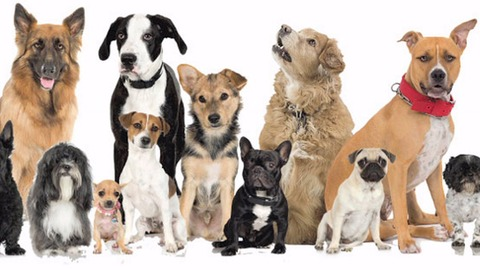
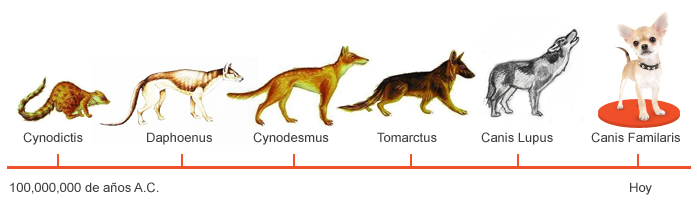

PERROS

A continuacion alguna informacion basica
La sigiuente informacion es procedente de National Geographic :)
El perro es un mamífero doméstico que pertenece al grupo de los carnívoros.
Es una subespecie del lobo gris, a quien se lo considera como su antepasado, y tiene semejanzas con los zorros.
Expresa sus estados de ánimo a través de gestos, ladridos, gruñidos, de su postura corporal y de los movimientos de la cola.
Es capaz de establecer vínculos muy afectuosos y fieles con los humanos.
Seguidamente observaremos una imagen que nos resume un poco la evolucion fisica de los perros hasta el dia de hoy:

Ya desde la hace muchos años se conocen casos de convivencia entre estos mamíferos descendientes del lobo y el ser humano.
Cuando el hombre se dio cuenta de que podía ser un compañero muy eficaz se creó una relación que ha evolucionado hasta el dia de hoy.
Se cree que esta relacion de compañia se produjo en Europa hace entre 20.000 y 40.000 años dando lugar a la especie que hoy conocemos
como Canis Lupus familiaris .
Ahora profundizaremos en las razas de perros mas interesantes
¿Sabias queeee?
Los perros pueden llegar a entender hasta 250 palabras.
Los perros si tienen una percepción del tiempo, y pueden percibir lapsos de tiempo de hasta 4 horas.
Los perros que no han sido castrados, reciben el terminó de perros enteros.
La raza de perros más antigua es el Saluki, se han encontrado vestigios de estos perros en tumbas egipcias.
La nariz del perro está húmeda, porque así puede absorber mejor los químicos aromáticos del ambiente.
Los perros pueden contagiarse de los bostezos de sus dueños.
Espero que lo anterior te haya informado y gustado
Muchas gracias por hoy!
Autor: DANNA SOFIA AGUAS SALAMANCA
¡Adioooos!